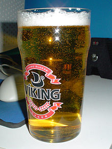
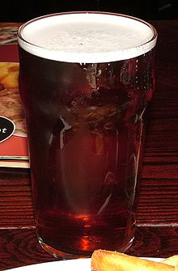

Fermentacion baja - Larger
La baja fermentación se emplea en la elaboración de algunas cervezas (generalmente de color claro rubio, «lager») con algunos matices dorados oscuros, y de marcado sabor a lúpulo. Se elaboran con malta de color claro por el método de cocción. La levadura de estas cervezas actúa a baja temperatura (en el intervalo que va de 6 a 10 °C) y pasan de 8 a 10 días tras los cuales se depositan en el fondo de la cuba. El nombre de esta fermentación se debe a este efecto de precipitación.
Fermentacion alta - Ale
La fermentación alta es un tipo de fermentación usado en la elaboración de algunas cervezas. Se denomina así por producirse en la superficie exterior alta (del latín altus). La fermentación se forma por los cultivos de la Saccharomyces cerevisiae, que suben a la parte superior del tanque de fermentación (cervezas «ale»).